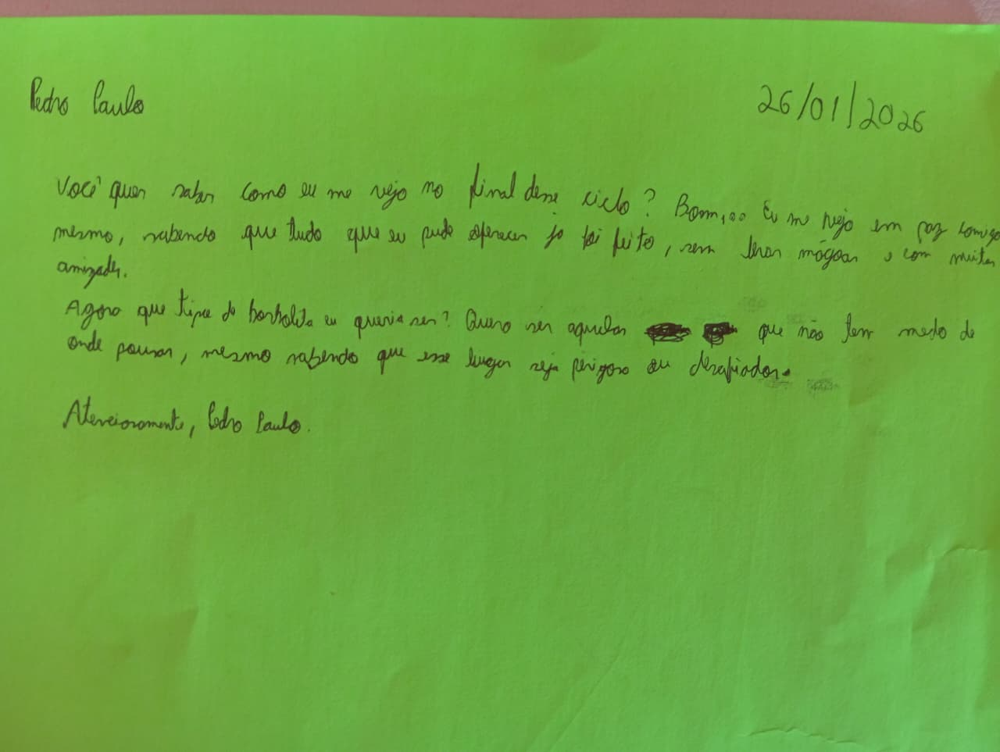
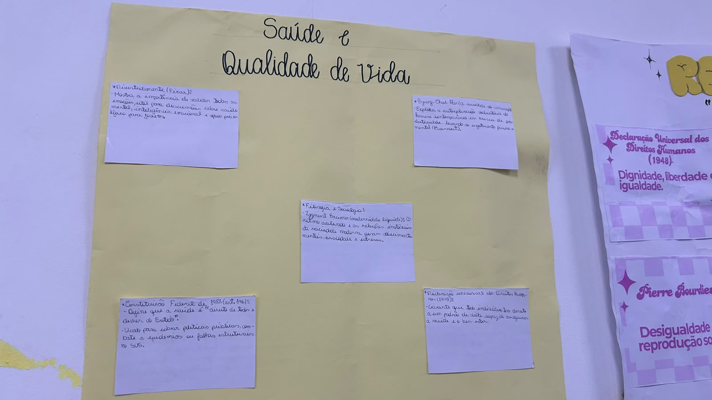

EIXO I

Atividade sobre que tipo de borboleta eu sou
Data: 26/01/2026
Professora: Kercia
Descrição: Estudo sobre filósofos e suas principais ideias.

Atividade sobre realidades
Data: 31/01/2026
Professora: Kercia
Descrição: Texto explicando a atividade.

A vida por meio das telas
Data: 10/02/2026
Professora: Kercia
Descrição: Apresentação do impacto da vida nas telas.

Apresentação There is/There Are
Data: 09/03/2026
Professora: Rute
Descrição: Apresentação do conteúdo que caiu na prova.
EIXO II

Mapa mental sobre a evolução da mulher na literatura
Data: 13/04/2026
Professora: Rute
Descrição: Um mapa mental feito em inglês sobre a evolução da mulher na literatura.

Scrap page The Black Power Moviment
Data: 20/04/2026
Professora: Rute
Descrição: Confecção de uma scrap page sobre o movimento negro, onde tivemos sugetões e instruções do que deve ter.

Apresentação sobe Érico Veríssimo
Data: 25/04/2026
Professora: Kercia
Descrição: Apresentação sobre a vida e obra de determinados autores, em expecífico nessa apresentação, Érico Veríssimo.

Lista de questões sobre Intertextualidade e Interdiscursividade
Data: 06/05/2026
Professora: Kercia
Descrição: Exercício proposto pela professora Kercia com assuntos de necessário entendimento para a realização da avaliação.

Mapa Mental sobre Tipos e Gêneros Textuais
Data: 03/06/2026
Professora: Kercia
Descrição: Mapa mental envolvendo os tipos e gêneros textuais.
EIXO III

Repertórios sobre Saúde e Qualidade de Vida
Data: 03/08/2026
Professora: Kercia
Descrição: Mural de repertórios socioculturais.

Terceira Fase do Modernismo no Brasil
Data: 12/08/2026
Professora: Kercia
Descrição: Mapa mental sobre a terceira fase do Modernismo no Brasil.

Quadrilha e Square Dance.
Data: 24/08/2026
Professora: Rute
Descrição: Leitura, pesquisa e quadro comparativo sobre quadrilha e square dance.

Frase marcante de um filme
Data: 08/09/2026
Professora: Rute
Descrição: Pesquisa sobre uma frase marcante de um filme em inglês, explorando seu significado, contexto, tradução e relação com a obra
EIXO IV
Nome da atividade